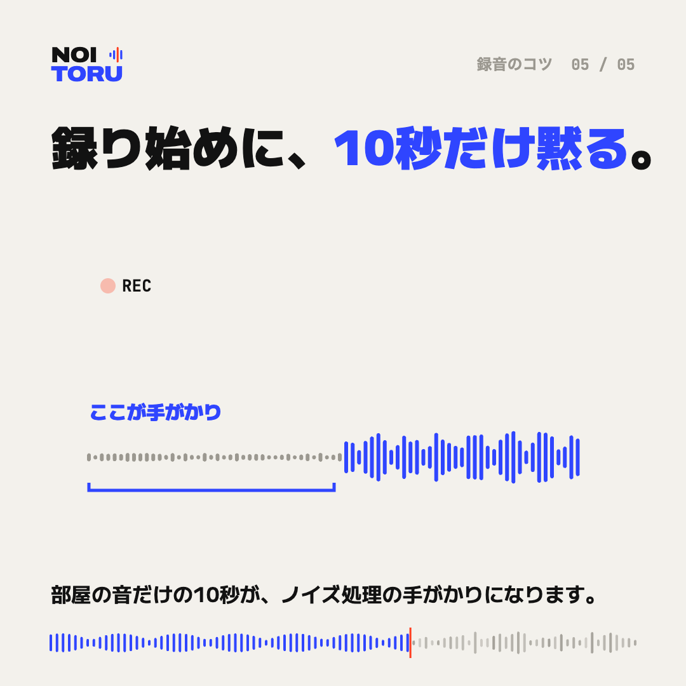

録り始めに、10秒だけ黙る

部屋の音だけの10秒が、見本になる
ノイズ処理では、雑音だけが入っている部分を手がかりに、何を減らすかを決めます。録り始めに10秒ほど黙っていると、その部屋の音だけが残り、処理の見本になります。
やり方
録音ボタンを押したら、話し始める前に、みんなで10秒ほど黙ります。紙をめくる、椅子を動かすといった音も立てずに、部屋の音だけを録ります。
途中で場所が変わったら
移動して部屋や周りの音が変わったときも、話し始める前に数秒黙っておくと、その場所の手がかりになります。
ご依頼のときは
ノイトルにご依頼いただくときは、黙っている部分があれば、その時刻を教えてください。なくても処理はできますので、ご安心ください。